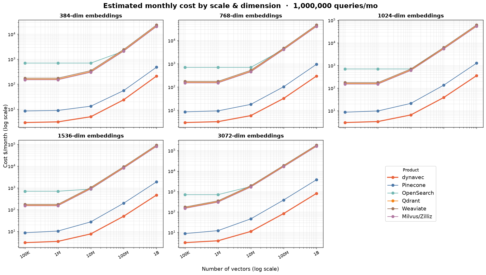
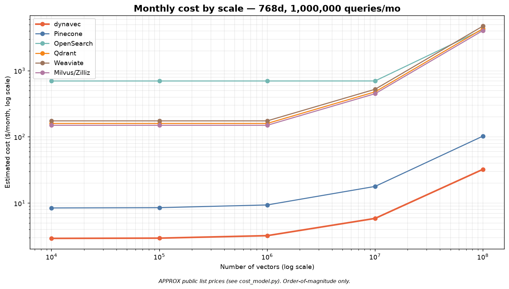
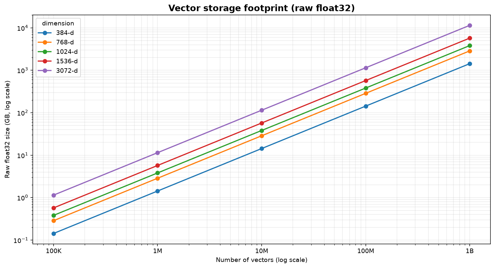

Cost-effective
No always-on cluster, no managed-service premium. You pay S3-priced vector storage plus DynamoDB on-demand. Idle cost approaches storage only.
Open source · Apache-2.0 · runs in your AWS account
dynavec fuses Amazon DynamoDB (single-digit-millisecond metadata & document store) with Amazon S3 Vectors (billion-scale, serverless ANN) into one Python client — a drop-in alternative to Pinecone, Qdrant, Milvus, Weaviate, and OpenSearch that bills only when you use it and keeps every byte in your own region.
pip install dynavec
uv add dynavec
Built on two AWS primitives you already trust
No servers, no managed-database bill — dynavec is just a Python client that orchestrates these two services inside your account.
No always-on cluster, no managed-service premium. You pay S3-priced vector storage plus DynamoDB on-demand. Idle cost approaches storage only.
S3 Vectors returns the nearest keys; the actual documents are hydrated from DynamoDB in single-digit milliseconds via BatchGetItem.
Amazon S3 Vectors searches across billions of vectors with 90%+ recall — the serverless ANN engine, managed by AWS.
Everything stays in your account, your region, your availability zones. dynavec only ever calls AWS with your credentials.
Serverless primitives scale to zero and back automatically. IAM is the only access boundary; assume-role and per-tenant namespaces built in.
LangChain and LlamaIndex vector stores plus a framework-agnostic retriever tool for LangGraph, CrewAI, and Strands.
Two AWS primitives, each doing the one job it is best at, joined by a shared key.
Holds the vector plus a small filterable metadata subset. AWS-managed approximate-nearest-neighbor over billions of vectors. Cosine or euclidean natively; cosine / dot / euclidean / manhattan (and weighted combinations) available as client-side rescoring.
Canonical store for full text and rich metadata, hydrated by key in single-digit ms. Also holds the knowledge-graph adjacency lists that connect entities to embeddings, so you can traverse structure first and narrow the vector search.
Cost across every common embedding dimension (384–3072) and 100K → 1 billion vectors. dynavec stays lowest at every point because its storage is priced like S3, not RAM.



text-embedding-3-small) — $/month @ 1M queries/mo| Product | 100K | 1M | 10M | 100M | 1B |
|---|---|---|---|---|---|
| dynavec | $3 | $3 | $8 | $50 | $469 |
| Pinecone | $9 | $10 | $27 | $197 | $1,897 |
| OpenSearch | $701 | $701 | $877 | $8,423 | $83,708 |
| Qdrant | $160 | $160 | $960 | $8,640 | $85,920 |
| Weaviate | $175 | $175 | $1,050 | $9,450 | $93,975 |
| Milvus/Zilliz | $150 | $150 | $900 | $8,100 | $80,550 |
Cost is computed by the repository's transparent cost model from public list prices —
order-of-magnitude, verify before quoting. Recall and latency figures in the repo are
representative until a live AWS run replaces them. Reproduce everything with
python -m benchmarks.report.
Clean, explicit, and framework-friendly. Bring your own embedder and API key, or your own vectors.
from dynavec import Dynavec, DynavecConfig, Document
from dynavec.embeddings import OpenAIEmbedder
cfg = DynavecConfig(
vector_bucket="my-vectors",
index="docs",
table="dynavec_docs",
dimension=1536,
region="us-east-1",
auto_provision=True, # creates bucket + index + table
)
db = Dynavec(cfg, embedder=OpenAIEmbedder(model="text-embedding-3-small"))
db.upsert([
Document(id="a", text="Mitochondria power the cell.", metadata={"topic": "bio"}),
Document(id="b", text="Rockets reach orbit at ~28,000 km/h.", metadata={"topic": "space"}),
], auto_metadata=True)
for hit in db.search("how do cells make energy?", top_k=3):
print(hit.score, hit.id, hit.text)# metadata pre-filter + client-side metric rescoring + MMR diversity
hits = db.search(
"fast serverless storage on AWS",
top_k=5,
filter={"topic": "aws"},
rescore={"cosine": 0.7, "manhattan": 0.3}, # weighted combination
rerank="mmr",
)
# bring your own vector (no embedder required)
hits = db.search(vector=my_1536d_vector, top_k=10)# one index, many tenants — clean isolation + even partitioning
kb = db.namespace("tenant-42")
kb.upsert([Document(id="1", text="private doc")])
kb.search("query scoped to this tenant only", top_k=4)
# stream results to an agent as pages arrive
for hit in db.search_stream("large query", top_k=100):
handle(hit)# attach meaning: entities, relations, and links to documents
db.graph_add_edge("acme", "competes_with", "globex", namespace="kb")
db.graph_link("acme", ["doc-1", "doc-2"], namespace="kb")
# GraphRAG: traverse structure first, then rank only related docs
hits = db.graph_search(
"recent product launches",
seed_entities=["acme"],
hops=2,
top_k=10,
)from dynavec import Dynavec, SemanticCache, DynamoDBCache
# serve near-duplicate queries from memory (no vector search)
db = Dynavec(cfg, embedder=embedder, cache=SemanticCache(threshold=0.97))
# or a shared, durable cache in your own DynamoDB table (TTL expiry)
db = Dynavec(cfg, embedder=embedder, cache=DynamoDBCache(cfg))
# RedisCache(...) targets AWS ElastiCache for sub-millisecond shared cachefrom dynavec.integrations.langchain import DynavecVectorStore
store = DynavecVectorStore(db, namespace="kb")
retriever = store.as_retriever(search_kwargs={"k": 4})
# framework-agnostic tool for LangGraph / CrewAI / Strands
from dynavec.integrations.tools import make_retriever_fn
retrieve = make_retriever_fn(db, top_k=4) # fn(query: str) -> strfrom dynavec.ingest import ingest, MCPResourceSource
# turn ANY MCP server (Notion, Confluence, Drive, ...) into a corpus:
# chunk, embed, and upsert its resources in one call
ingest(db, MCPResourceSource(mcp_session), namespace="kb")dynavec is Apache-2.0 and community-built. Issues, PRs, and ideas are welcome.
git clone https://github.com/\
codeforstartups/dynavec
cd dynavec
uv pip install -e ".[dev]"
pytest -qAsync client, an hnswlib hot tier, sort-key graph adjacency, file-parser ingestion sources, and a live-AWS test matrix are all open on the roadmap.
Browse issues →Stars help other developers find dynavec. If it saves you money or keeps your data in-account, let people know.
Star on GitHub (—) →